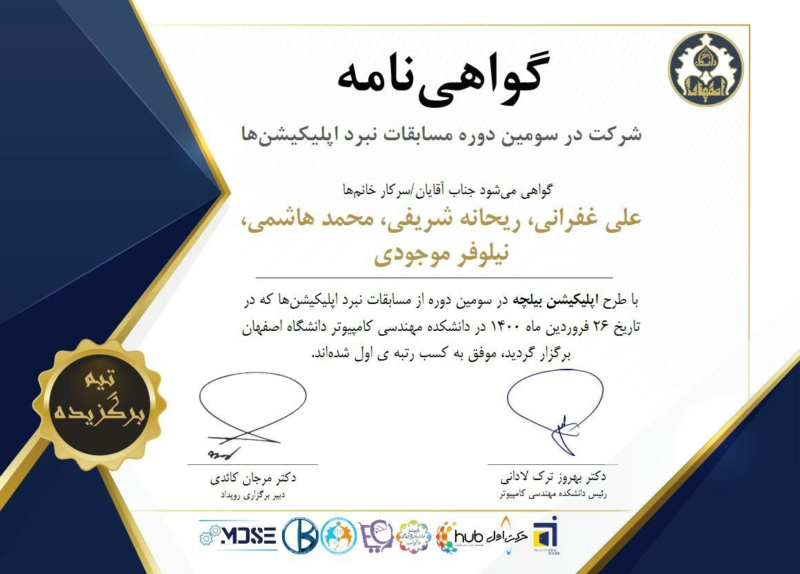
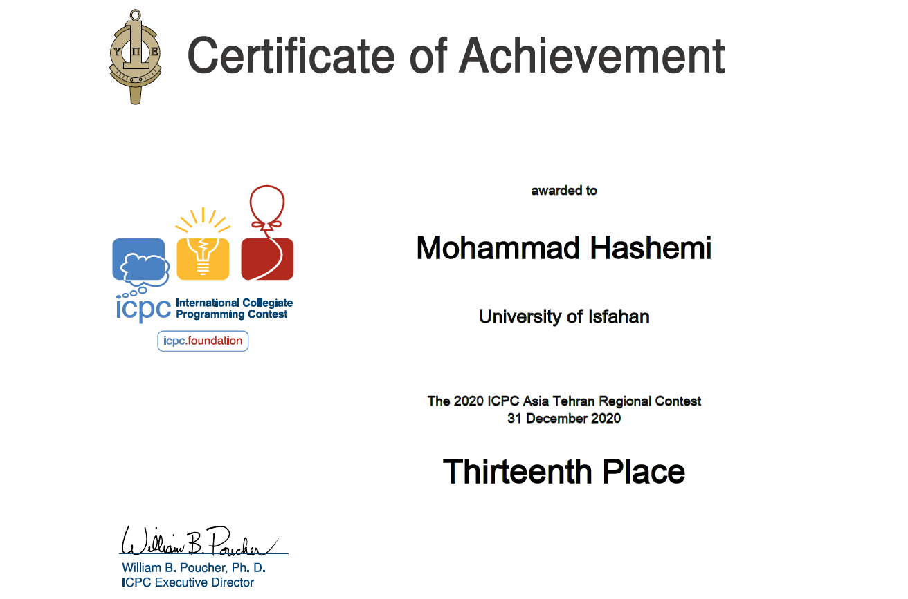
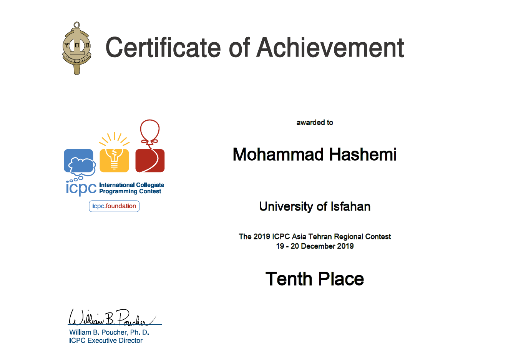
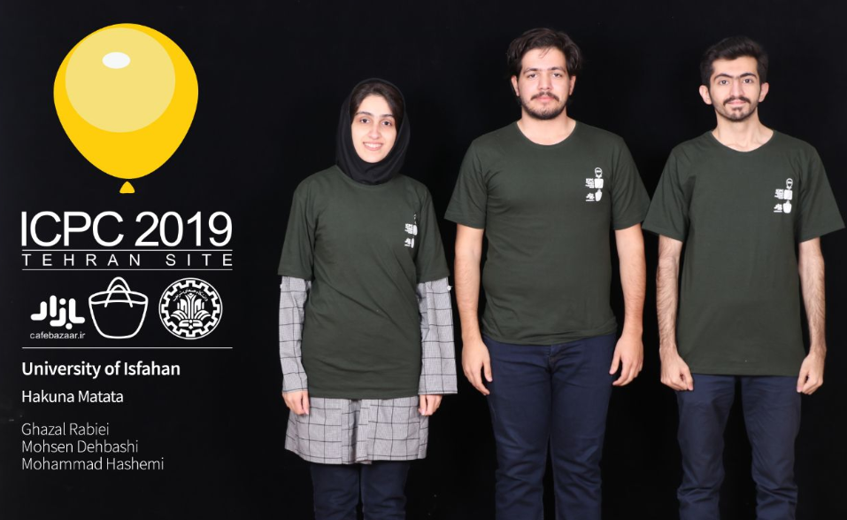
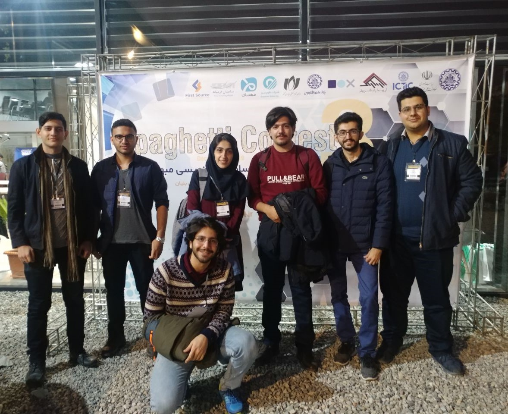
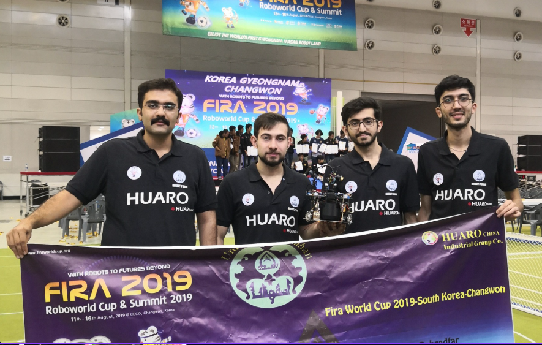
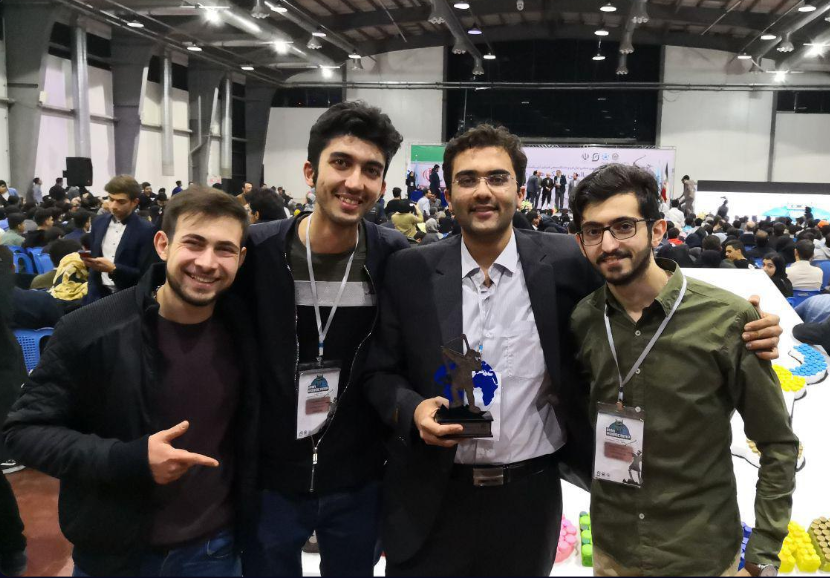
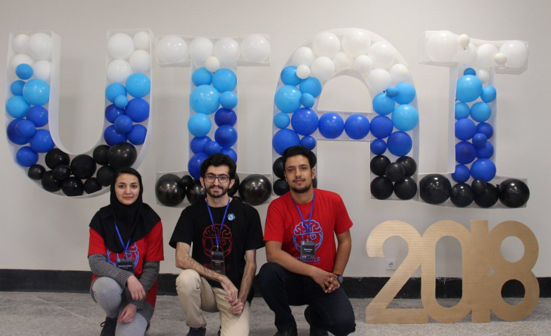
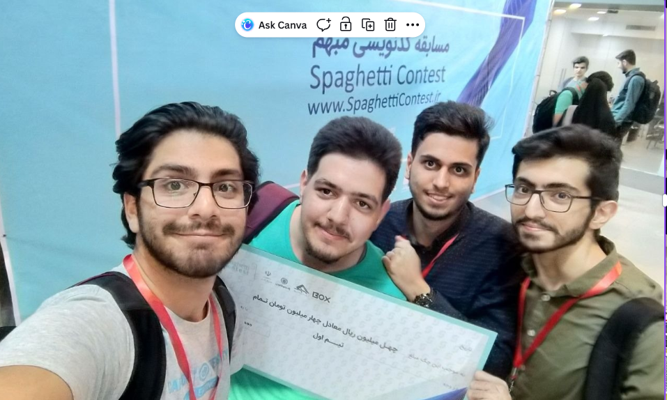

This page highlights my rankings, scholarships, and achievements in competitive programming, robotics, and software development.
Type: Ranking
Year: Present
Ranked in the top 3.03% of participants on LeetCode, a widely used platform for practicing data structures and algorithms. This reflects strong problem-solving ability and consistent performance across a large number of coding challenges.
Type: Ranking
Year: Present
Ranked among the top 150 users on Kattis, a competitive programming platform used in international contests. This ranking reflects consistent performance on challenging algorithmic problems.
Type: Scholarship
Organization: University of Windsor, Canada
Year: 2023
Awarded by the School of Computer Science for maintaining strong academic performance, with a minimum GPA of 80% in graduate-level courses.
Type: Competition
Organization: University of Isfahan, Iran
Year: 2021
A competition where teams design and present application ideas across platforms such as web or Android. Participants must demonstrate the value of their idea, how it addresses user needs, and how it engages its target audience. Our team achieved first place by presenting a strong and well-structured solution.

Type: Competition
Organization: Sharif University of Technology, Tehran Site
Year: 2020
Participated in the regional round of the International Collegiate Programming Contest (ICPC), one of the most prestigious programming competitions globally. Teams compete by solving complex algorithmic problems under strict time constraints.

Type: Competition
Organization: Sharif University of Technology, Tehran Site
Year: 2019
Achieved 10th place in the ICPC Asia West Regional, competing against top university teams in solving advanced algorithmic problems under time pressure.


Type: Competition
Organization: Sharif University of Technology, Iran
Year: 2019
A competitive programming contest focused on analyzing and reverse-engineering intentionally obfuscated (“spaghetti”) C++ code. Teams both submit their own code and attempt to break others’ implementations. Achieved first place in two consecutive years.

Type: Competition
Organization: Changwon, South Korea
Year: 2019
An international robotics competition where teams design and program autonomous robots. In the Robosot Race league, robots must detect colored balls, collect them, and deliver them to designated targets. Our team built both the hardware and software systems and achieved 4th place globally.

Type: Competition
Organization: Amirkabir University of Technology, Iran
Year: 2019
A national robotics competition and qualifying event for the FIRA RoboWorld Cup. Teams develop autonomous robots to perform task-based challenges. Achieved 1st place in the technical challenge and 4th place overall by match points.

Type: Competition
Organization: University of Isfahan, Iran
Year: 2018
An AI programming competition where teams developed intelligent agents to compete in a simulated Soccer Stars–style game, focusing on strategy, decision-making, and optimization.

Type: Competition
Organization: Sharif University of Technology, Iran
Year: 2018
Won first place in a competitive programming contest centered on reverse-engineering complex and intentionally obfuscated C++ programs.
